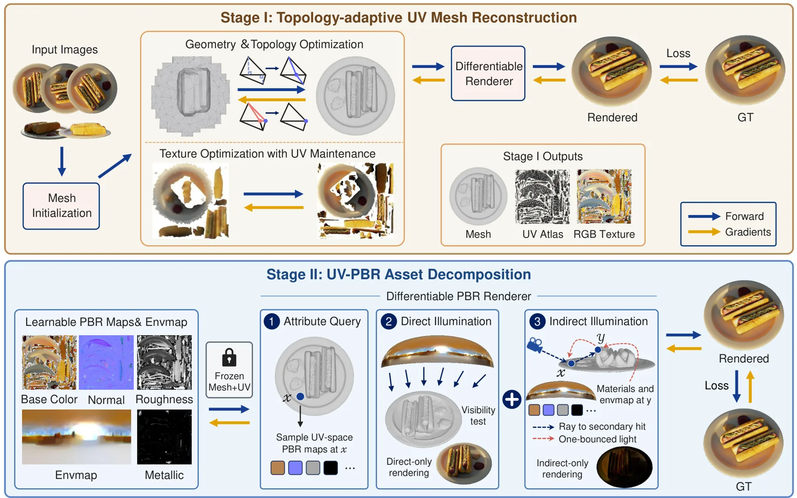
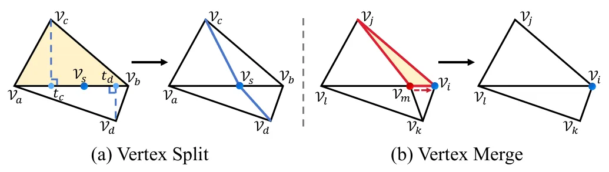
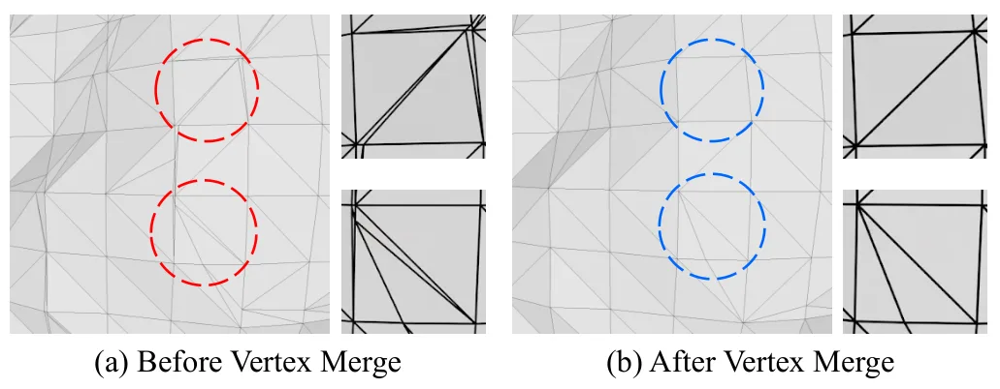
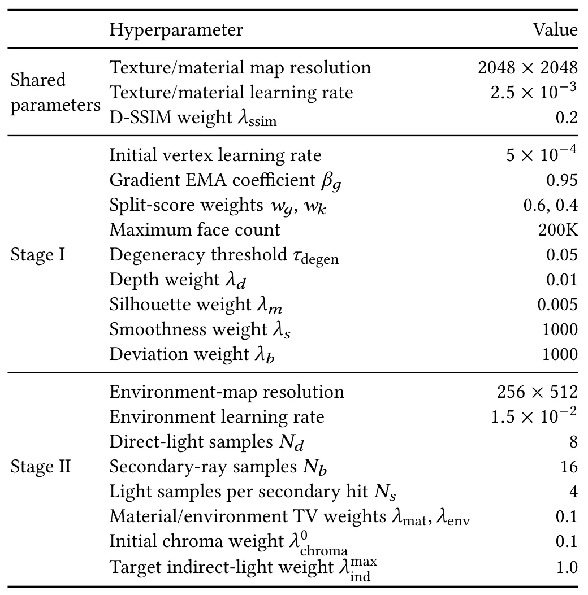

ExMesh++：通过拓扑自适应重建与分解从多视图图像生成可重光照 UV-PBR 网格ExMesh++: From Multi-View Images to Relightable UV-PBR Mesh Assets via Topology-Adaptive Reconstruction and Decomposition
明确连接多视图重建、显式网格拓扑和 PBR 资产导出，工程落地性强；与 SLAM 位姿估计本身不直接相关。
一句话工作总结
把多视图重建结果直接推进到拓扑、UV、材质和光照均可交付的资产，适合关注重建后处理与标准 DCC 工作流的读者。
摘要
ExMesh++ 分阶段从多视图图像重建可编辑的 UV-PBR 网格资产。第一阶段通过自适应顶点拆分与合并优化显式几何和拓扑，同时维护 UV 一致性；第二阶段固定网格—UV 载体，联合优化 UV 空间 PBR 材质图和环境光，并用次级射线建模一跳漫反射间接光。
Multi-view reconstruction extends beyond surface recovery to editable and relightable mesh assets. Such assets require well-formed topology, valid UV parameterization, and explicit PBR material maps. Existing surface reconstruction approaches optimize implicit fields, Gaussian primitives, or other intermediate representations. Converting them into such assets often requires surface extraction and texture baking. Inverse-rendering methods estimate materials and illumination, yet these components often remain tied to neural fields or point-based primitives rather than the final mesh. Joint optimization of geometry, materials, and lighting may also allow these variables to compensate for one another, leading to ambiguous decomposition. To address these limitations, we present ExMesh++, a staged framework for reconstructing relightable UV-PBR mesh assets from multi-view images. The first stage refines explicit mesh geometry and topology through adaptive vertex splitting and merging, while maintaining UV consistency as the topology changes. The second stage fixes the resulting mesh-UV carrier and optimizes UV-space PBR maps together with environment lighting. Building on this stable carrier, ExMesh++ models one-bounce diffuse indirect illumination through secondary-ray tracing with shared UV-PBR materials. Experiments demonstrate competitive geometry accuracy, strong relighting performance, and direct usability of the exported assets in standard DCC workflows.
中文解读摘录
- 中文名：Luce：用于三维资产生成的可重光照高斯表示
- 方向：3DGS、三维资产生成、PBR、可重光照。
- 要点：把几何与 PBR 材质统一到体素化多模态 Gaussian cloud，用 VAE 和 rectified-flow transformer 从单图生成可重光照高斯，并可导出带法线图的纹理网格；在 Toys4K 上报告 FID 较强基线提升 28%。
- 判断：本轮三维重建候选中表示链路最完整，但不是 SLAM 算法。
图表/页面预览

{kind=link}

{kind=link}

{kind=link}

{kind=link}
